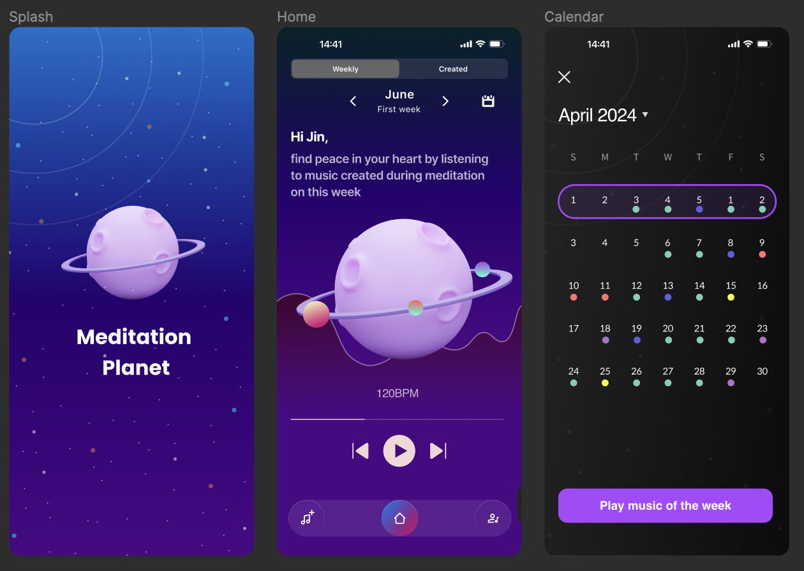
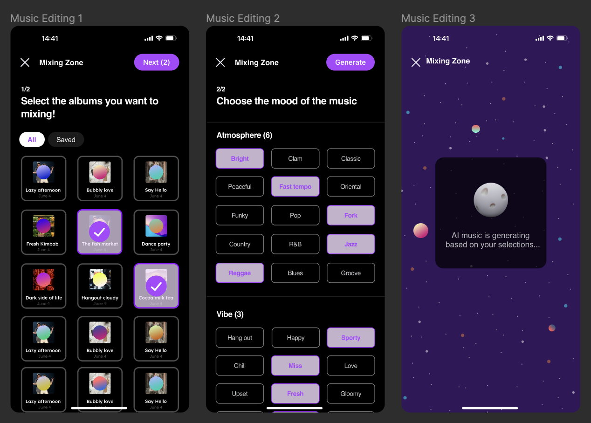
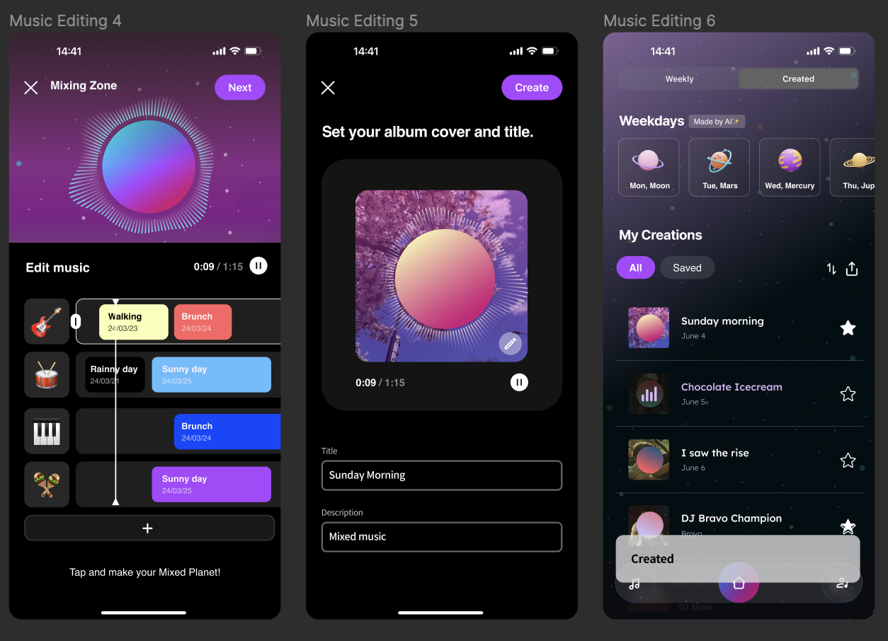
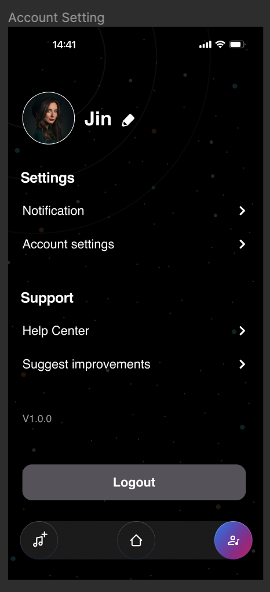

WEEK12 : Upgrade the prototype based on the User Test
Team | Sohee Kim , Yujeong Bae, Eunsoo Cho

01
Home Screen

Usability Issues:
The current home screen presents a default view based on a calendar layout, contrasting sharply with the list view, which appears to be organized around emotional listings. This inconsistency could confuse users and detract from the user experience.
User's Mental Model: Users might expect a consistent visual and organizational style that aligns with the primary function of the app. The discrepancy between the calendar view and the emotional list view does not conform to the typical user's mental model of a cohesive, intuitive interface.
A-ha Moment: By eliminating the list view and replacing its icon with a calendar icon, we align more closely with the users' expectations and the app's core functionality. This change can enhance user satisfaction by offering a more predictable and harmonious interface, leading to an "a-ha moment" where users find the app more intuitive and aligned with their needs.
User's Mental Model: Users might expect a consistent visual and organizational style that aligns with the primary function of the app. The discrepancy between the calendar view and the emotional list view does not conform to the typical user's mental model of a cohesive, intuitive interface.
A-ha Moment: By eliminating the list view and replacing its icon with a calendar icon, we align more closely with the users' expectations and the app's core functionality. This change can enhance user satisfaction by offering a more predictable and harmonious interface, leading to an "a-ha moment" where users find the app more intuitive and aligned with their needs.
03
Music Editing

Usability issues : Consusing about what is the each buttons indicate.
User's mental model : Editing tools are not seems related with timeline editing features.
A-ha moments : The idea of adding the AI generate model.
User's mental model : Editing tools are not seems related with timeline editing features.
A-ha moments : The idea of adding the AI generate model.
05
Account Setting

User's mental model : It seems clearer than other screens